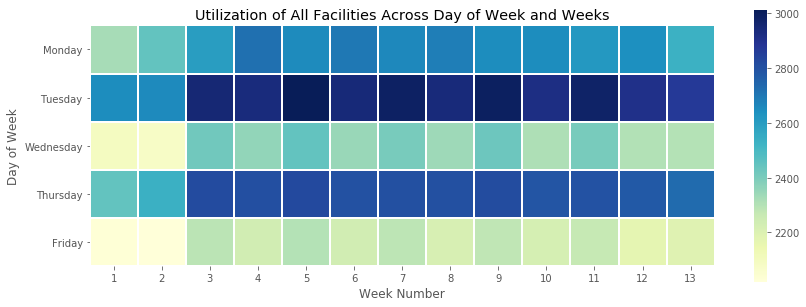
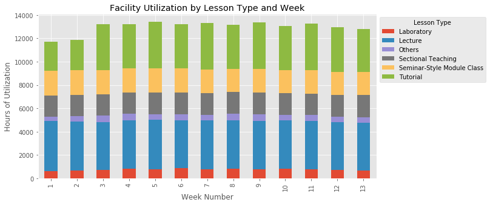
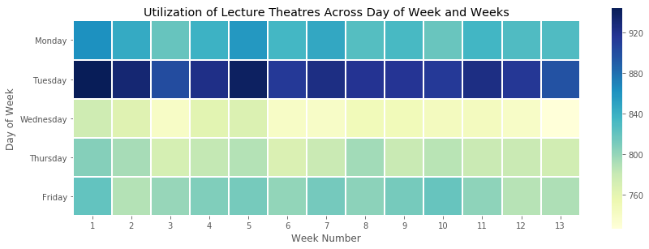
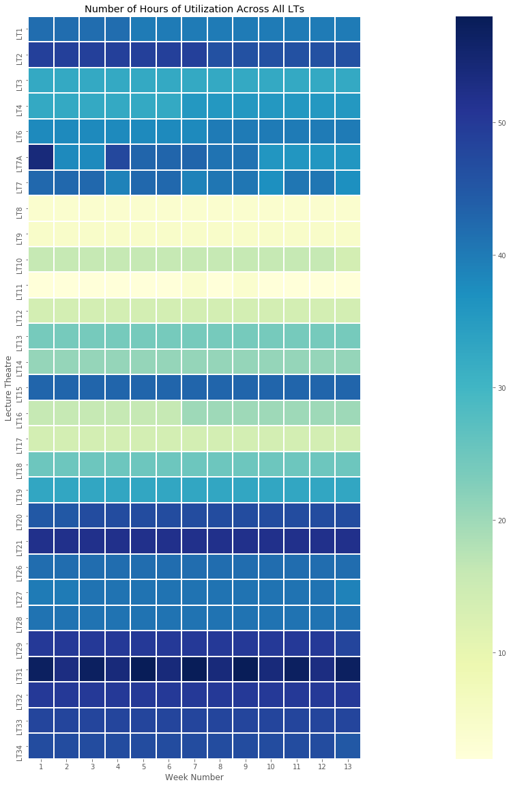
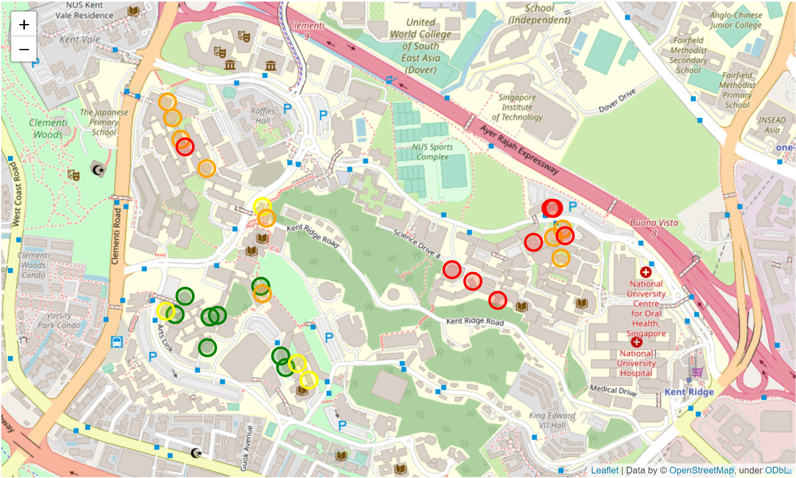
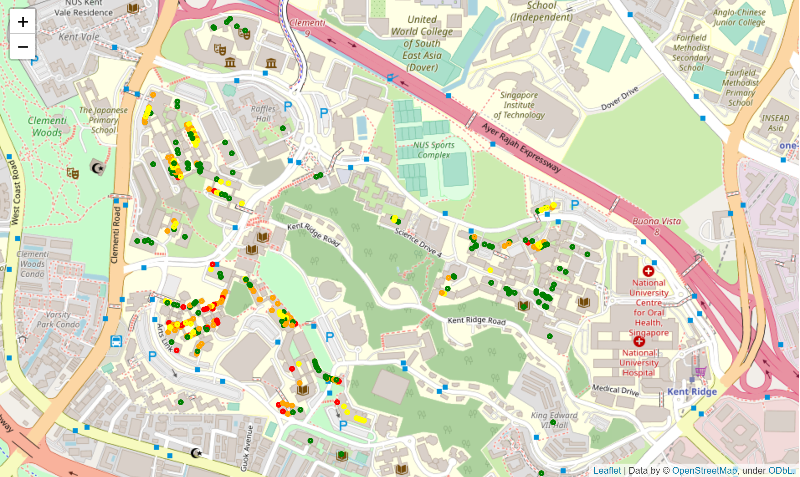

Planned Facility Utilization at National University of Singapore
Introduction
The National University of Singapore (NUS) has hundreds of teaching facilities (classrooms, seminar rooms, lecture theatres
and laboratories) spread across its 1.5 kilometre square main campus at Kent Ridge. Before the start of every semester,
allocation of limited teaching facilities for hundreds of modules, tens of thousands of students over 13 instructional weeks
is a daunting task. In this analysis, we investigate the planned utilization of these teaching facilities from the perspective
of a lesson scheduler. The role of a scheduler is to plan out lesson timings, allocate facilities for lessons and pre-empt
future needs.
Dataset
The dataset is obtained from nusmods.com. It comprises of planned schedules for teaching facilities in NUS. It includes the name of the facility, start time,
end time of scheduled lesson, the module code of the lesson conducted, which instructional week is it being scheduled for and
the latitude and longitude of the venue.
Analysis
Query 1: Is the utilization of all teaching facilities evenly spread across the entire semester?

-
Utilization of facilities are not even across day of week. Tuesday and Thursday have heaviest utilization
while Wednesday and Friday have lower utilizations. Should facilities be over utilized on Tuesday and Thursday,
a solution might be to schedule some lessons on Wednesday and Friday instead.
-
Utilization is also not even throughout the weeks. Week 1 and 2 have lower utilization and it increased from
week 3 onwards (refer to query 2).
-
There is also difference in utilization between odd and even weeks, this can be seen in the alternating light
and darker shades, most obvious across Wednesdays and Fridays. This is presumably due to alternating odd/even week tutorials.
Query 2: What causes the increase in utilization from week 3 onwards?

-
In Query 1, we saw that the utilization of facilities increased from week 3 onwards, this is due to the start
of tutorial sessions as shown by the increase in length of the green bar.
Query 3: Is utilization of Lecture Theatres evenly spread across the entire semester?

-
We look at facilities whose names starts with “LT”, e.g. LT19.
-
Most of the utilization of lecture theatres are on Monday and Tuesday.
-
Load balancing can be done by shifting large classes to other days if necessary.
We drill down to look at utilization of different LT across the semester. LT8 to LT17 except for LT15 appears
to be underutilized. Can we shift some of the load from highly utilized LTs to the underutilized LTs? (Refer to next query)

Query 4: Can utilization be balanced among LTs?
Let’s look at the geographical location of the LTs and their utilization.

-
The LTs are generally located in clusters, one at Faculty of Science (FoS), one at Faculty of Engineering (FoE)
and the rest at Faculty of Arts and Social Sciences (FASS) and School of Computing (SoC).
-
It appears that utilization of LTs at FoS is highest, while utilization at FASS and SoC are lowest.
-
An ideal way to balance utilization would be to spread the load to nearby LTs, to reduce excessive travelling by
staffs and students. However, all nearby LTs at FoS are almost fully utilized. It may not be ideal to transfer FoS
lectures to FASS taking into consideration of the inconvenience of travelling by FoS staffs and students.
Query 5: Does Faculty of Science also experience high utilization for Non-LT facilities?
Let’s look at the geographical location of the LTs and their utilization.

-
Once again, we see that the facilities are clustered. One at Faculty of Science (FoS),
one at Faculty of Engineering (FoE) and the rest at Faculty of Arts and Social Sciences (FASS)
and School of Computing (SoC).
-
It appears that the non-LT facilities at FoS are of low utilization while facilities at FASS
& SoC are of higher utilization. This is the opposite as compared to what we saw in LT facilities.
-
This might be due to the nature of the classes. FoS has more large-group teaching (i.e. lectures) and fewer
tutorial groups and seminars while the opposite is true for FASS.
-
Despite the higher utilization at FASS and SoC, we see that there is still some spare capacity (green dots)
indicating that the number of facilities is sufficient to cater to the classes for now.